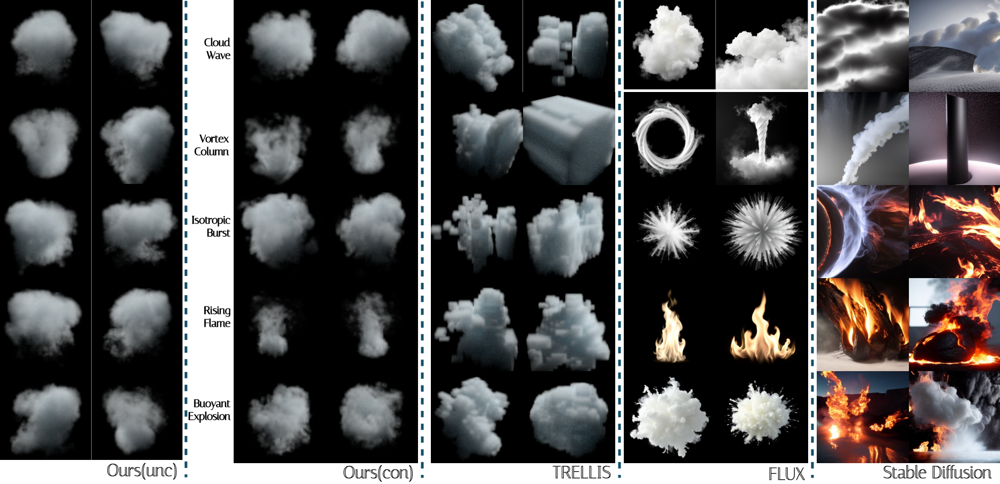
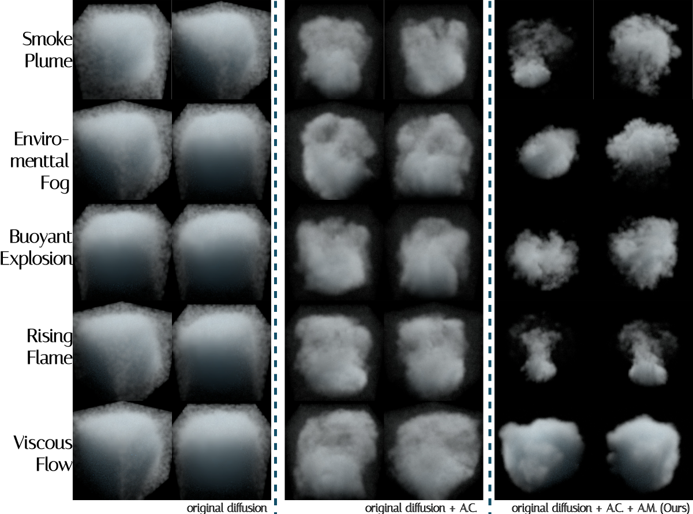

Abstract
Volumetric effects such as smoke, fire, dust, and explosions are central to Visual Effects (VFX) production and are commonly represented as sparse, high-resolution VDB/OpenVDB sequences with dynamic topology. Despite rapid progress in diffusion-based 3D generation, work on sparse volumetric sequences remains difficult to compare and reproduce, due to the lack of large-scale, well organized datasets and standardized evaluation protocols. In this paper, we introduce a 1-million-sample VFX sequence of VDB dataset with standardized preprocessing, consistent metadata, and protocol-ready splits, together with a reproducible benchmark suite for both static volume generation and sequence volumes generation. We further provide an end-to-end evaluation pipeline and a scalable diffusion training framework, enabled by our Atomic-Continuous prior, which addresses the distributional mismatch between vanilla diffusion models and the intrinsic sparsity of VDB data. Our release establishes a practical infrastructure for reproducible research and systematic progress tracking in sparse volumetric sequence generation.
Contributions
A 1M-sample VFX-VDB sequence dataset
The first million-level curated corpus of parametric OpenVDB sequences spanning 11 categories, with standardized canonicalization, production metadata, and a unified serialization format for reliable large-scale training.
A reproducible benchmark protocol
A frozen evaluation suite for unconditional, class-conditioned, and temporal generation. The protocol pairs perceptual metrics with a structural iso-surface diagnostic that penalizes non-physical topology.
A VDB-native reference model
To our knowledge, the first generative training framework built entirely on OpenVDB data, equipped with our Atomic-Continuous prior — a strong, reproducible anchor for the bimodal statistics of sparse volumes.
Dataset
VfxDB is a production-aligned corpus of VFX volumetric assets stored as OpenVDB grids. Rather than proposing new simulation algorithms, it contributes a standardized, audit-friendly data release paired with a frozen training/evaluation specification that enables consistent benchmarking across methods and over time.
Three fluid regimes
- Explosive & Buoyant — e.g. BuoyantExplosion, Ringblast: high-velocity expansion and rapid thermal advection.
- Dissipative & Laminar — e.g. SmokePlume, ViscousFlow: smooth motion and detailed dissipation.
- Environmental & Chaotic — e.g. AtmosphericFog, IsotropicBurst: unconstrained, high-entropy fields.
Physically-based parameterization
A fully procedural pipeline (Houdini, Sparse Pyro for gases, FLIP for liquids) where each category is a master recipe and variability is injected through sampled physical controls:
- Emitter dynamics — source shape, emission rate, initial velocity.
- Fluid solvers — buoyancy, viscosity, turbulence, dissipation.
- External forces — randomized wind fields and vortex confinement.
Release format & auditability
Raw OpenVDB sequences with complete hash IDs and metadata. Each frame carries at minimum a floating-point density grid (background fixed to 0); world-space transforms and optional auxiliary grids (velocity/temperature) are preserved when available. Per-sequence manifests, version tags, and deterministic identifiers form an immutable snapshot.
Released under CC BY-NC 4.0 for research and benchmarking.
Production assets exhibit extreme dynamic ranges. After calibration to 32³ dense grids, the non-zero mean clusters around 1 while the overall mean drops below 0.1 (often 0.01) — a sharply heavy-tailed, sparse distribution in both spatial occupancy (active-voxel ratio) and temporal duration.
Figures

Framework Overview. VfxDB brings together a large-scale VDB dataset, a standardized benchmark, and a VDB-native generative modeling framework.

Dataset Diversity. The dataset covers diverse VFX volume categories and remains visually consistent across common production rendering backends.

Value Distribution. Calibrated statistics highlight the sparse and heavy-tailed value distribution that makes VDB-native generation challenging.

Denoising Trajectory. Intermediate denoising states show how sparse volumetric structure emerges from noise during generation.
Benchmark Protocol
We benchmark generative modeling of density-only production VFX volumes across three evaluation tracks aligned with common workflows. Evaluation is distributional: discrepancies between generated samples and a held-out reference set are measured under a frozen, versioned specification, so every method is compared under identical preprocessing and observation.
Unconditional static
Single-frame density-volume generation with no conditioning.
Class-conditioned static
Generate a volume that matches a discrete phenomenon label.
Temporal
Generate temporally consistent volume sequences for a label.
Frozen evaluation mapping
Canonicalization maps each raw grid into a unified cubic domain at a fixed resolution (R = 128): active-voxel ROI → cube padding with background 0 → value domain d ∈ [0,1] with negative/NaN handling. The observation model renders each canonical volume at 512×512 under deterministic cameras and a fixed, aggressive density-to-optical mapping (4-view protocol) that exposes rather than hides low-density wisps — preventing methods from masking artifacts behind favorable transfer functions.
Metrics
Perceptual fidelity
Multi-view KID (static, unbiased estimator suited to small VFX sets) and FVD (temporal coherence & motion realism).
Structural integrity
Set-level MMD penalizes “density hacking” — volumes that render plausibly in 2D but lack coherent 3D boundaries.
Semantic alignment
CLIP-Text measures agreement between rendered output and the target phenomenon label.
Method: Atomic-Continuous Priors
Volumetric scalar fields follow a bimodal distribution — a mixture of exact zero-values (empty space) and heavy-tailed continuous densities on the signal support. We model voxel density with an Atomic-Continuous prior, p(x) = π0δ0(x) + (1−π0) pac(x). Standard Gaussian diffusion cannot resolve this duality, failing through spectral collapse (smoothed-out wisps) and topology leakage (mass that never converges to the zero-atom).
Amplitude Companded Score Space
A bijective log-linear mapping preconditions the score network. Acting as a gradient rescaler, it scales the back-propagated error by (1 + λx̃)−1, amplifying gradients for wispy low-density structures relative to dense cores.
Atomic Mass Support Supervision
Explicitly enforces the sparsity atom via a value-fidelity term over the active support, a Beer–Lambert occupancy proxy for coarse topology, and a null-space leakage penalty that drives density to zero outside the boundary.
Markovian Temporal Conditioning
Sequences are factorized under a local Markov assumption. The previous volume state is concatenated channel-wise with the noisy input, learning advection through shared spatial kernels — temporal coherence at the cost of single-frame synthesis.
Results

Static generation
| Method | MMD-R ↓ | MMD-G ↓ | KID ↓ | CLIP-Text ↑ |
|---|---|---|---|---|
| Baseline | 1.04 | 0.24 | 0.40 | 30.12 |
| Baseline + A.C. | 1.00 | 0.13 | 0.27 | 27.77 |
| Flux-schnell | – | – | 0.32 | 30.90 |
| Stable-Diffusion-1.5 | – | – | 0.30 | 30.14 |
| TRELLIS | 1.01 | 0.33 | 0.40 | 30.47 |
| Ours (con.) | 0.98 | 0.14 | 0.20 | 28.82 |
| Ours (con., RF) | 1.03 | 0.19 | 0.21 | 29.05 |
| Ours (unc.) | 0.96 | 0.02 | 0.13 | 27.34 |
A.C.: Amplitude Companded Score Space; con./unc.: conditional/unconditional; RF: rectified-flow variant.
Temporal generation
| Method | FVD ↓ | MMD-R ↓ | MMD-G ↓ | KID ↓ | CLIP-Text ↑ |
|---|---|---|---|---|---|
| ZeroScope | 5546 | – | – | 0.39 | 26.95 |
| ModelScope | 3333 | – | – | 0.34 | 28.73 |
| Ours (temp) | 1345 | 0.99 | 0.13 | 0.18 | 27.52 |
Human evaluation
A study with 36 professional artists covered dataset-quality scoring and generated-result ranking. Experts scored ground-truth assets on a 1–5 scale — 4.41 physics, 4.31 details, 4.37 aesthetics, 4.37 LOD tier — indicating production-grade quality. Rankings of generated results (lower is better) track the KID/MMD ordering above.
| Method (generated) | Ours | Baseline + A.C. | TRELLIS | Baseline |
|---|---|---|---|---|
| Avg. human rank ↓ | 1.47 | 2.56 | 2.73 | 3.15 |

Dataset Rendered Video Previews
BibTeX
@inproceedings{shu2026vfxdb,
title = {VfxDB: A Visual Effects Volume Dataset and Benchmark for VDB-Native Generative Modeling},
author = {Shu, Junwei and Liu, Hantang and Miao, Dawei and Song, Wenzheng and
Yuan, Mingyang and Liu, Wenjie and Chen, Changgu and Li, Yang and Wang, Changbo},
booktitle = {SIGGRAPH Conference Papers '26},
year = {2026},
publisher = {Association for Computing Machinery},
doi = {10.1145/3799902.3811178},
isbn = {979-8-4007-2554-8},
url = {https://vfxdb-official.github.io/VfxDB/}
}